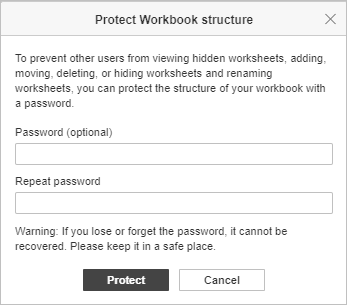
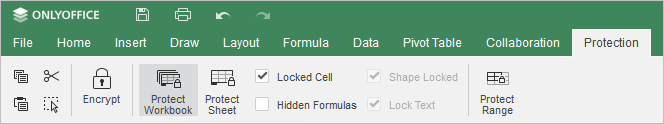
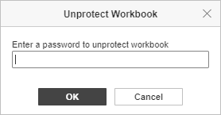

Zaštita radne sveske
Opcija Protect Workbook omogućava vam da zaštitite strukturu radne sveske i kontrolišete korisničke manipulacije radnom sveskom, tako da niko ne može da vidi skrivene radne listove, kao ni da dodaje, pomera, briše, skriva ili preimenuje radne listove. Radnu svesku možete zaštititi sa ili bez lozinke. Ako ne koristite lozinku, svako može ukloniti zaštitu sa radne sveske.
Da biste zaštitili radnu svesku:
- Idite na karticu Protection i kliknite na dugme Protect Workbook na gornjoj alatnoj traci.
-
U prozoru Protect Workbook structure koji se otvara unesite i potvrdite lozinku, ukoliko želite da postavite lozinku za uklanjanje zaštite sa ove radne sveske.

-
Kliknite na dugme Protect da biste omogućili zaštitu sa ili bez lozinke.
Lozinka se ne može povratiti ako je izgubite ili zaboravite. Molimo vas da je sačuvate na sigurnom mestu.
Dugme Protect Workbook na gornjoj alatnoj traci ostaje istaknuto kada je radna sveska zaštićena.

- Da biste uklonili zaštitu sa radne sveske:
- ako je radna sveska zaštićena lozinkom, kliknite na dugme Protect Workbook na gornjoj alatnoj traci, unesite lozinku u iskačući prozor Unprotect Workbook i kliknite na OK.

- ako je radna sveska zaštićena bez lozinke, jednostavno kliknite na dugme Protect Workbook na gornjoj alatnoj traci.
- ako je radna sveska zaštićena lozinkom, kliknite na dugme Protect Workbook na gornjoj alatnoj traci, unesite lozinku u iskačući prozor Unprotect Workbook i kliknite na OK.